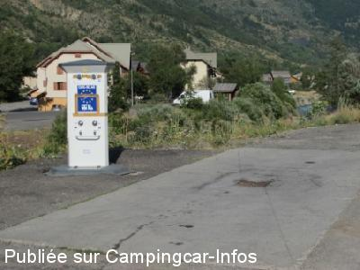
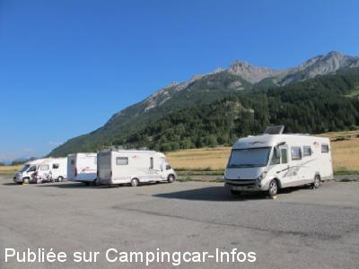
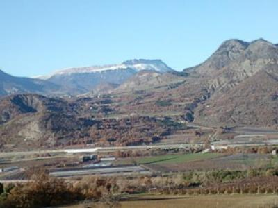
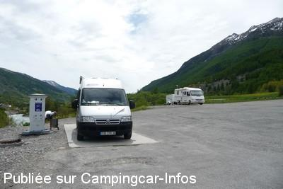
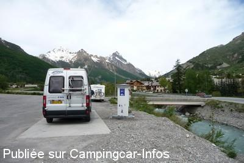

ASN = Aire de services avec stationnement nuit possible de :
SERRE CHEVALIER Le Monêtier Les Bains
(N° 570)
Accès/adresse :
Route des Bains
Parking des Charmettes
05220 SERRE CHEVALIER Le Monêtier Les Bains
Parking des Charmettes
05220 SERRE CHEVALIER Le Monêtier Les Bains
Latitude : (Nord) 44.97136° Décimaux ou 44° 58′ 16′′
Longitude : (Est) 6.51246° Décimaux ou 6° 30′ 44′′
Tarif : 2015
Stationnement, services : 4,80 €
Taxe de séjour non comprise
A régler à l'agent
Type de borne : EURO-RELAIS
Services :


Tous commerces au village
Autres informations :
Ouvert toute l'année
40 emplacements
Aire goudronnée en pente
Tél mairie : + 33(0)492 244 004
Renseignements : +33(0)492 249 899
monetier@monetier.com
http://www.monetier.com/

Le 08/08/2015 par Myriam R

Le 08/08/2015 par Myriam R

Le 04/12/2012 par brutus

Le 12/06/2010 par Xtian74

Le 12/06/2010 par Xtian74
de
eric76e
le 02/04/2016 :
parking calme, services très pratique, aux pieds des pistes, légère pentes, commerces et village à 15 mn
parking calme, services très pratique, aux pieds des pistes, légère pentes, commerces et village à 15 mn
de
Myriam R
le 08/08/2015 :
Nuit sur l'aire de Monétier les Bains (en entrant au village, prendre à gauche vers le parking des remontées mécaniques)à la mi-juillet. Aire du parking Les Charmettes, 4.80 euros+taxe de séjour que l'on paie à l'agent municipal lorsqu'il passe. Le tarif est dégressif selon le nombre de nuits passées sur l'aire. Aire de vidanges. Borne euro-relais pour le plein d'eau.
Aire idéale pour faire une pause détente aux thermes de Monétier: village et thermes à 10 minutes à pied.
Nuit sur l'aire de Monétier les Bains (en entrant au village, prendre à gauche vers le parking des remontées mécaniques)à la mi-juillet. Aire du parking Les Charmettes, 4.80 euros+taxe de séjour que l'on paie à l'agent municipal lorsqu'il passe. Le tarif est dégressif selon le nombre de nuits passées sur l'aire. Aire de vidanges. Borne euro-relais pour le plein d'eau.
Aire idéale pour faire une pause détente aux thermes de Monétier: village et thermes à 10 minutes à pied.
de
SERRE Albert.
le 02/12/2012 :
§
Bonsoir
De passage ce week-end, sur cette aire, voici les tarifs affichés:
1er jour et 2eme jour) 4€80:: 3eme et 4eme) 4€::5 eme) 3€; plus taxe de séjour par personne et par jour. La borne "euro relais" est toujours gratuite, donc comprise dans le prix. Le système de carte d'hôtes est toujours en vigueur
Il s'agit d'une carte donnée au premier paiement par le préposé, et qui permet de circuler sur les navettes jusqu'à Briançon. Très avantageux pour se déplacer dans tout Serre Chevalier
§
Bonsoir
De passage ce week-end, sur cette aire, voici les tarifs affichés:
1er jour et 2eme jour) 4€80:: 3eme et 4eme) 4€::5 eme) 3€; plus taxe de séjour par personne et par jour. La borne "euro relais" est toujours gratuite, donc comprise dans le prix. Le système de carte d'hôtes est toujours en vigueur
Il s'agit d'une carte donnée au premier paiement par le préposé, et qui permet de circuler sur les navettes jusqu'à Briançon. Très avantageux pour se déplacer dans tout Serre Chevalier
de
daniel
le 08/09/2012 :
§
par daniel le 8/9/2012
Grand parking un peu incliné ( voir photo )au bord de la Guisiane - calme et agréable fin août
eau et vidange libres d'accès - 5€ la 1ère nuit
§
par daniel le 8/9/2012
Grand parking un peu incliné ( voir photo )au bord de la Guisiane - calme et agréable fin août
eau et vidange libres d'accès - 5€ la 1ère nuit
de
rafale
le 25/06/2011 :
Aire bénéficiant d'un bel environnement mais à utiliser avec des cales de niveau pour la plupart des endroits.
Attention le parking Est que j'appellerais plutôt Nord est traversé rapidement par des voitures qui répugnent à suivre la route et préfèrent couper court.
Aire bénéficiant d'un bel environnement mais à utiliser avec des cales de niveau pour la plupart des endroits.
Attention le parking Est que j'appellerais plutôt Nord est traversé rapidement par des voitures qui répugnent à suivre la route et préfèrent couper court.
de
SERRE Albert
le 10/03/2011 :
Bonsoir. Ayant séjourné 4 jours sur cette aire, je confirme l'écrit précédent. Bien que ce ne soit pas la même personne, la policière municipale est très sympa, nous renseigne sur la station. Le système des cartes est toujours en vigueur. Auparavant, les saisonniers étaient groupés sur une des 2 aires. Ces derniers faisant assez de chahut après leurs services, ils ont été dispersés, ce qui a ramené le calme. Les tarifs sont dégressifs aà partir du 3ème jour. Il faut ajouter la taxe par personne. Tout compris, pour 4 nuits, j'ai payé 17,90€. La borne Euro Relais est en fonction. Amitiés.
Bonsoir. Ayant séjourné 4 jours sur cette aire, je confirme l'écrit précédent. Bien que ce ne soit pas la même personne, la policière municipale est très sympa, nous renseigne sur la station. Le système des cartes est toujours en vigueur. Auparavant, les saisonniers étaient groupés sur une des 2 aires. Ces derniers faisant assez de chahut après leurs services, ils ont été dispersés, ce qui a ramené le calme. Les tarifs sont dégressifs aà partir du 3ème jour. Il faut ajouter la taxe par personne. Tout compris, pour 4 nuits, j'ai payé 17,90€. La borne Euro Relais est en fonction. Amitiés.
de
SERRE Albert.
le 25/01/2010 :
Bonjour. De passage ce week-end, il s'avère que l'aire est composée de deux parkings. L'un dit parking Ouest, l'autre parking Est. De plus, une partie du parking Ouest est réservée aux saisonniers. Ils occupent les 2/3 environ. Une borne Euro Relais est maintenant en place sur le parking Ouest et accessible par tout le monde. Son utilisation est comprise dans le prix.
Nous avons stationné sur le parking Est. Il est moins en pente que l'autre. Par contre, dans la journée, autant les voitures que les cars de tourisme y stationnent. J'ai pris quelques photos que je mettrais en ligne dès que possible. Amitiés.
Bonjour. De passage ce week-end, il s'avère que l'aire est composée de deux parkings. L'un dit parking Ouest, l'autre parking Est. De plus, une partie du parking Ouest est réservée aux saisonniers. Ils occupent les 2/3 environ. Une borne Euro Relais est maintenant en place sur le parking Ouest et accessible par tout le monde. Son utilisation est comprise dans le prix.
Nous avons stationné sur le parking Est. Il est moins en pente que l'autre. Par contre, dans la journée, autant les voitures que les cars de tourisme y stationnent. J'ai pris quelques photos que je mettrais en ligne dès que possible. Amitiés.
de
marc
le 10/08/2009 :
De passage début juillet, le prix est de 5€ dégressif et non 8€ (confirmation O.T.). Par contre, ce tarif est injustifié pour un vulgaire parking sans sanitaires, en pente et où il est difficile de se mettre de niveau. Seule note positive, la jeune fille qui collecte l'argent est très sympathique et reste volontiers à discuter avec les camping-caristes, ça aide à faire passer la pilule !!!.
De passage début juillet, le prix est de 5€ dégressif et non 8€ (confirmation O.T.). Par contre, ce tarif est injustifié pour un vulgaire parking sans sanitaires, en pente et où il est difficile de se mettre de niveau. Seule note positive, la jeune fille qui collecte l'argent est très sympathique et reste volontiers à discuter avec les camping-caristes, ça aide à faire passer la pilule !!!.
de
SERRE Albert
le 10/03/2009 :
Cette aire est à 100M. de la station. Elle est goudronnée, mais en pente. Prévoir des cales. Une borne est enfin en place. Un employé de la mairie passe pour faire payer les 24H. 8€ en période estivale et 5€ hors période.
Pour tous renseignements téléphoner au 04 92 24 98 99. Son accès est totalement libre. Il n'y a pas de barrière à l'entrée. Il n'y a pas de branchement électrique possible.
Cette aire est à 100M. de la station. Elle est goudronnée, mais en pente. Prévoir des cales. Une borne est enfin en place. Un employé de la mairie passe pour faire payer les 24H. 8€ en période estivale et 5€ hors période.
Pour tous renseignements téléphoner au 04 92 24 98 99. Son accès est totalement libre. Il n'y a pas de barrière à l'entrée. Il n'y a pas de branchement électrique possible.
de
Robert
le 01/03/2008 :
L'aire réservée aux camping-cars a été légèrement déplacée. Il existe une borne artisanale et une grille au sol pour les vidanges. Tarif: 4,80€ + 0,20€ de taxe de séjour par personne. En principe, quelqu'un passe chaque soir. Le parking est goudronné mais un peu en pente avec une capacité de 30 à 50 CC.
Village sympa à proximité et remontées mécaniques très proches.
L'aire réservée aux camping-cars a été légèrement déplacée. Il existe une borne artisanale et une grille au sol pour les vidanges. Tarif: 4,80€ + 0,20€ de taxe de séjour par personne. En principe, quelqu'un passe chaque soir. Le parking est goudronné mais un peu en pente avec une capacité de 30 à 50 CC.
Village sympa à proximité et remontées mécaniques très proches.